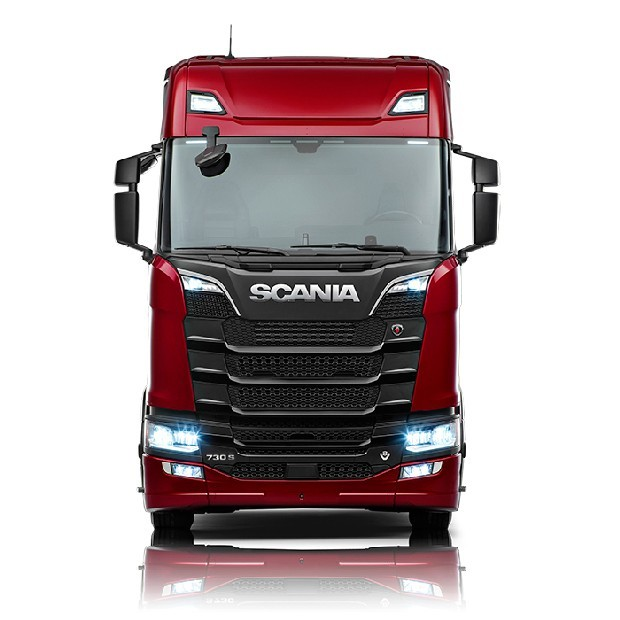

linha P
A linha P da Scania é nossa linha de cabines mais versátil, ideal para operações urbanas e regionais e aprovada em construção e outras condições exigentes.
|

linha G
A linha G da Scania traz a infalível combinação de conforto e elegância por dentro e por fora. Oferecendo opções de armazenamento exclusivas, bem como uma cabine espaçosa.
|

linha R
Não há como negar - a elegante cabine está mais resistente e eficaz do que nunca. Prepare-se para virar cabeças com a carroceria atlética que redefine o conceito de "premium" em caminhões de longa distância.
|

linha S
A linha S cria uma nova referência de conforto para o motorista de longa distância. Descubra um interior que é um paraíso de luxo, com um piso plano e instalações de armazenamento estendido, projetado para uma área espaçosa.
|

V8
O novo trem de força Scania V8 inicia uma incrível experiência de condução. Quando combinado com a nova caixa de câmbio Scania Opticruise, é possível obter uma economia de combustível de até 6%
|

XT
A linha XT da Scania foi criada para resistir a condições variadas e ambientes desafiadoras, de modo que você realize uma operação lucrativa.
|